INTERVLAN Routing & VLANs
Pertemuan 10
Pendalaman Ekstensif: Virtual LAN, Trunking 802.1Q, DTP, Router-on-a-Stick & Layer 3 Switch
Referensi: Bahan Ajar Week10.pptx & RPS Jaringan Komputer
Dosen Pengampu:
Link Layer & LANs: Roadmap
Pembahasan Link Layer mencakup beberapa sub-topik utama:
- A day in the life of a web request
- LANs (Local Area Networks)
- Addressing, ARP (Address Resolution Protocol)
- Ethernet
- Switches
- VLANs (Virtual LANs) - Fokus Kita Hari Ini
Virtual LANs (VLANs): Motivasi
Apa yang terjadi ketika ukuran LAN semakin membesar (scaling) dan user sering berpindah titik koneksi?
Masalah pada Single Broadcast Domain:
- Semua trafik layer-2 broadcast (seperti request ARP, DHCP, unknown MAC address) harus melintasi seluruh LAN.
- Hal ini memunculkan masalah Efisiensi jaringan yang menurun drastis.
- Munculnya masalah keamanan (Security) dan privasi, karena trafik bisa di-sniff di seluruh port switch.

Motivasi Administratif
Seringkali terdapat kendala di mana user dari departemen berbeda berada di ruangan/switch yang sama.
Contoh Kasus:
- Seorang user dari departemen Computer Science (CS) pindah kantor fisik ke departemen Electrical Engineering (EE).
- Ia terhubung ke switch secara fisik di gedung EE, tetapi ia ingin tetap tergabung secara logikal ke switch CS.
Port-Based VLANs
Switch yang mendukung kapabilitas VLAN dapat dikonfigurasi untuk mendefinisikan beberapa Virtual LANs di atas infrastruktur fisik yang tunggal.
Port-based VLAN: Port pada switch dikelompokkan (oleh software manajemen switch) sehingga switch fisik tunggal beroperasi sebagai beberapa switch virtual.
- Misal: Port 1-8 dialokasikan untuk EE VLAN.
- Misal: Port 9-15 dialokasikan untuk CS VLAN.

Traffic Isolation & Dynamic Membership
- Traffic Isolation: Frame dari/ke port 1-8 hanya bisa mencapai port 1-8. Tidak akan pernah bocor ke port 9-15.
- Dynamic Membership: Selain berdasarkan port, VLAN juga dapat didefinisikan berdasarkan MAC address endpoint (device). Port dapat di-assign secara dinamis antar VLAN.
- Forwarding between VLANs: Untuk menghubungkan antar VLAN, dibutuhkan proses routing (sama seperti menghubungkan switch fisik yang terpisah).
- Vendor saat ini menjual switch yang menggabungkan switch layer 2 plus router layer 3 (Layer 3 Switch / Multilayer Switch).

VLANs Spanning Multiple Switches
Bagaimana jika sebuah VLAN membentang melintasi beberapa switch fisik?
Trunk Port: Membawa frame di antara VLAN yang didefinisikan melewati beberapa switch fisik.
- Frame yang diteruskan di dalam VLAN antar-switch tidak bisa menggunakan frame 802.1 Ethernet biasa ("vanilla").
- Frame tersebut harus membawa informasi VLAN ID.
- Protokol 802.1Q menambahkan/menghapus field header tambahan untuk frame yang melintasi port trunk.
802.1Q VLAN Frame Format
Protokol 802.1Q menyisipkan Tag sebesar 4-Byte ke dalam frame Ethernet standar.
- Tag Protocol Identifier (2 byte): Memiliki nilai hex 0x8100 untuk menandakan bahwa ini adalah 802.1Q frame.
- Tag Control Information (2 byte): Berisi 12-bit VLAN ID (mendukung hingga 4094 VLAN) dan 3-bit priority field (mirip dengan IP TOS untuk Quality of Service).
- Recomputed CRC: Karena frame disisipkan field baru, perhitungan Frame Check Sequence (FCS/CRC) di akhir frame harus dihitung ulang.
EVPN: Ethernet VPNs (VXLANs)
Dalam skala Data Center raksasa, VLAN konvensional kadang tidak cukup. Digunakanlah EVPN (Ethernet VPNs) atau VXLANs.
- Switch Layer-2 Ethernet secara logikal terhubung satu sama lain menggunakan IP sebagai underlay.
- Frame Ethernet dibawa di dalam datagram IP antar situs (misal antara Data Center A dan B).
- Merupakan skema "Tunneling" untuk meletakkan jaringan Layer 2 (Overlay) di atas jaringan Layer 3 (Underlay) yang sudah ada.
Overview: Switch Tanpa VLAN
Jika kita menggunakan Switch yang tidak diatur VLAN-nya (kondisi Default):
- 1 Collision Domain per port (karena ini adalah sifat dasar switch).
- Semua port menjadi anggota dari 1 Broadcast Domain raksasa.
- Semua port berada dalam 1 subnet jaringan IP yang sama.
- Setiap host yang terhubung ke switch tersebut bisa berkomunikasi secara langsung dengan host lain tanpa butuh router.
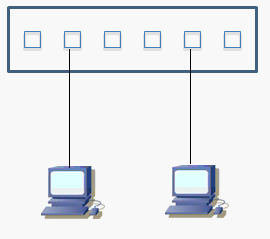
Overview: Switch Dengan 2 VLAN
Jika Switch dikonfigurasi dengan 2 VLAN berbeda (misal VLAN Merah dan VLAN Biru):
- Terbentuk 2 Broadcast Domain yang terpisah.
- Paket broadcast dari VLAN Merah hanya akan dikirim ke port-port anggota VLAN Merah.
- Setiap VLAN merupakan sebuah LAN network (subnet IP) tersendiri.
- VLAN Merah tidak bisa langsung ping ke VLAN Biru walau berada di switch fisik yang sama.
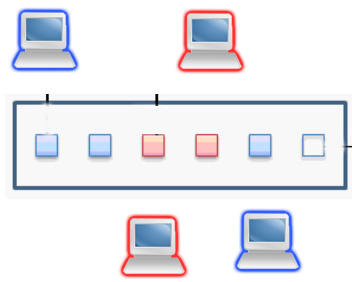
Rangkuman Konsep: Apa itu VLAN?
VLAN adalah pengelompokan logik dari device-device jaringan yang terhubung pada port switch, seakan-akan berada pada network tersendiri.
- VLAN dapat diberi nama untuk memudahkan administrasi (misal: "VLAN 10 Sales").
- Pada Switch: Kita melakukan konfigurasi VLAN dan meng-assign port ke VLAN yang diinginkan.
- Pada PC: Kita menetapkan IP Address yang sesuai dengan subnet VLAN port tersebut.
- Ingat: 1 VLAN = 1 Broadcast Domain = 1 Subnet.
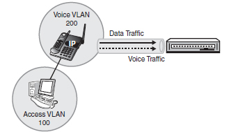
Keuntungan VLAN (1/2)
- Security (Keamanan)
Sekelompok device yang memiliki data sensitif dapat ditaruh dalam 1 VLAN tersendiri, terpisah secara broadcast dari user divisi lain. - Hemat Biaya
Untuk membuat network (subnet) baru, kita tidak perlu membeli switch fisik baru. Cukup alokasikan beberapa port menjadi VLAN baru pada switch yang sudah ada.
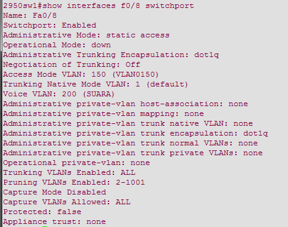
Keuntungan VLAN (2/2)
- Performa Meningkat
Memecah broadcast domain dapat mengurangi trafik sampah yang tidak penting, sehingga CPU perangkat dan bandwidth lebih optimal. - Efisiensi Meningkat
User-user dengan kepentingan/fungsi yang sama dapat disatukan dalam 1 VLAN meskipun beda lantai. - Flexibility
Anggota VLAN tidak harus berada dalam 1 switch dan 1 tempat yang sama, bisa melintasi antar gedung.
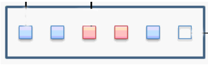
Karakteristik VLAN ID
Penomoran VLAN terbagi dalam dua range utama:
- Normal-range ID (1 - 1005):
- ID 1002 - 1005 digunakan untuk teknologi lama (Token Ring dan FDDI).
- VLAN 1, 1002 - 1005 sudah otomatis ada dari pabrik dan tidak bisa dihapus.
- Konfigurasi VLAN range normal ini disimpan di file
vlan.datdalam memori flash switch.
- Extended-range ID (1006 - 4094):
- Biasanya dipakai oleh Service Provider untuk skala sangat besar (Metro Ethernet).
- Disimpan di dalam file
running-config, tidak di vlan.dat.
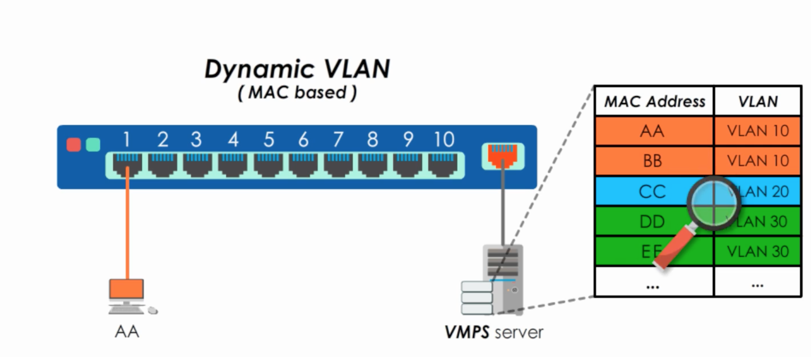
Tipe-Tipe VLAN (1/2)
- VLAN Data:
VLAN yang didedikasikan murni untuk membawa trafik data dari aktivitas end-user (komputer, laptop). - VLAN Default:
Tanpa konfigurasi apa pun, secara pabrik semua port switch adalah anggota VLAN 1. VLAN 1 tidak bisa dihapus atau diganti namanya. (Best practice: Pindahkan semua port ke VLAN selain VLAN 1 untuk alasan keamanan).
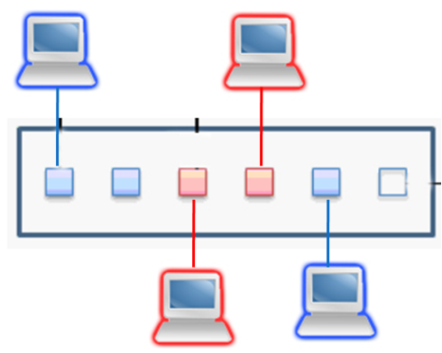
Tipe-Tipe VLAN (2/2)
- VLAN Management:
VLAN yang dialokasikan khusus untuk me-manage perangkat jaringan. Kita menaruh IP Address switch pada VLAN management ini agar switch bisa diremote via SSH/Telnet dengan aman. - VLAN Voice:
Trafik telepon/voice sebaiknya dipisahkan dari VLAN data ke VLAN Voice tersendiri karena sifat trafiknya yang sangat butuh stabilitas tinggi.
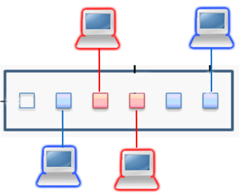
Lebih Dalam: Voice VLAN
Trafik voice harus diperlakukan secara istimewa di dalam jaringan karena:
- Membutuhkan jaminan bandwidth agar suara tidak putus-putus.
- Prioritas transmisi di antrean switch harus lebih tinggi dari trafik data biasa.
- Delay transmisi end-to-end idealnya harus kurang dari 150 milisecond.
Perintah CLI Cisco untuk mengaktifkan Voice VLAN:
Switch(config-if)# switchport access vlan 150 <- (Data)Switch(config-if)# switchport voice vlan 200 <- (Voice)Switch(config-if)# mls qos trust cos <- (Prioritas CoS)
VLAN Membership (Keanggotaan)
1. Static Membership
Port-port pada switch dikonfigurasi secara manual oleh administrator jaringan sebagai anggota dari VLAN tertentu. Lokasi port menentukan VLAN PC tersebut.
- Port 1 = VLAN 10
- Port 2 = VLAN 10
- Port 3 = VLAN 20
2. Dynamic Membership
Keanggotaan ditentukan oleh server terpusat bernama VMPS (VLAN Membership Policy Server). Keanggotaan bukan diikat ke port, melainkan ke MAC Address milik komputer/device.
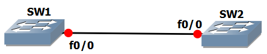
Konsep TRUNK Link
Trunk adalah link yang menghubungkan antar Switch ke Switch, atau Switch ke Router.
- Trunk link berfungsi memperluas jangkauan VLAN melebihi satu switch fisik tunggal.
- Sebuah Trunk link mampu membawa trafik data dari berbagai macam VLAN secara bersamaan.
- Agar tidak tertukar, setiap frame Ethernet yang lewat di Trunk akan diberi label identitas VLAN (disebut Tagging).
- Ada dua teknologi Layer 2 Tagging: ISL dan 802.1Q.
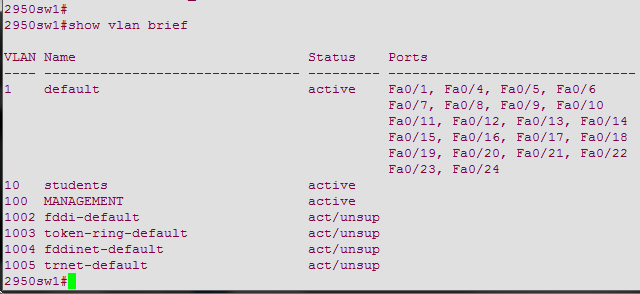
Tagging: ISL (Inter-Switch Link)
Protokol Tagging yang lebih tua dan eksklusif.
- Cisco Proprietary: Hanya dapat digunakan antar produk Cisco murni.
- Cara kerjanya membungkus (enkapsulasi) frame asli ke dalam frame yang baru secara keseluruhan.
- Menambahkan Header (26 bytes) dan Trailer CRC (4 bytes).
- Kelemahan: Tidak memiliki fitur Native VLAN. Semua frame yang tidak dibungkus ISL akan langsung di-drop.
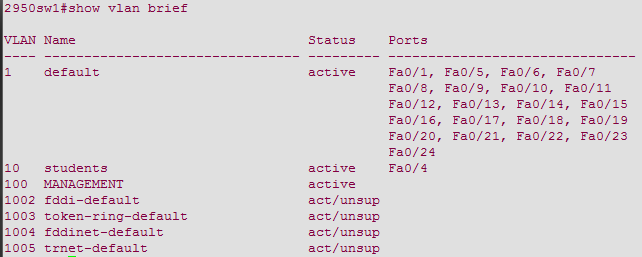
Tagging: 802.1Q (Dot1Q)
Protokol Tagging yang menjadi Standar Industri Modern.
- Open Standard IEEE: Dapat diimplementasikan menyilang antar vendor (Cisco ke Juniper ke Mikrotik).
- Cara kerjanya tidak membungkus ulang seluruh paket, melainkan menyelipkan Tag sebesar 4-byte ke dalam frame Ethernet original.
- Mendukung konsep Native VLAN, yakni VLAN default di mana jika ada frame tak ber-Tag (Untagged Frame), ia akan dimasukkan ke anggota Native VLAN.
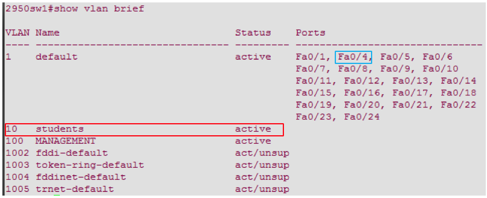
DTP (Dynamic Trunking Protocol)
DTP adalah protokol milik Cisco yang berfungsi mengatur negosiasi sebuah port apakah akan menjadi link Trunk atau link Access secara otomatis ketika dihubungkan dengan port switch di seberangnya.
Mode-mode Port Switch:
- Access: Pasti menjadi Access port (Non-trunk). Mengabaikan request seberang.
- Dynamic Auto: Pasif. Menunggu diajak (menunggu request DTP dari seberang) untuk menjadi Trunk. Jika seberang tidak mengajak, ia jadi Access.
- Dynamic Desirable: Aktif. Mengirimkan request DTP terus menerus membujuk port seberang agar mau menjadi Trunk bersama.
- Trunk: Pasti menjadi Trunk port. Memaksa pembentukan Trunk tanpa peduli status seberang.
Interaksi Switchport Mode (Tabel DTP)
Apa yang terjadi jika port F0/1 bertemu port F0/1 di switch seberang dengan mode berbeda?
| Mode Port Kiri | Mode Port Kanan | Hasil Akhir Link |
|---|---|---|
| Dynamic Auto | Dynamic Auto | Access |
| Dynamic Auto | Dynamic Desirable | Trunk |
| Dynamic Desirable | Dynamic Desirable | Trunk |
| Trunk | Dynamic Auto | Trunk |
| Trunk | Access | Tidak Dianjurkan (Error) |
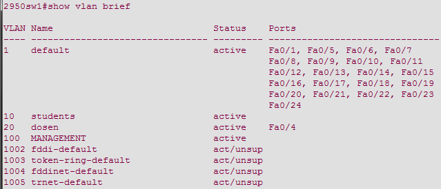
Kapan Memakai Access / Trunk?
- Mode Access: Gunakan saat port switch terhubung langsung ke end-device (PC, Server, Printer). Port mode Access hanya mengizinkan 1 VLAN spesifik.
- Mode Trunk: Gunakan saat port switch terhubung dengan Switch lain atau Router. Port mode trunk defaultnya membawa trafik dari SEMUA VLAN (1-4094).
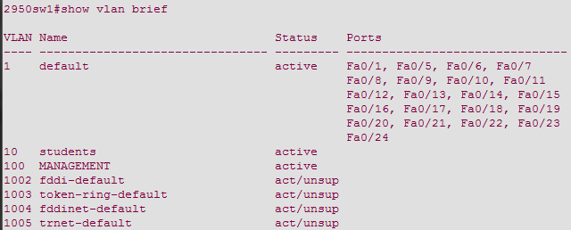
Konfigurasi VLAN: Create & Membership
Langkah-langkah di CLI (Command Line Interface) Cisco:
Switch# configure terminal
Switch(config)# vlan 10 <-- Membuat VLAN ID 10
Switch(config-vlan)# name students <-- Memberi nama VLAN
Switch(config-vlan)# exit
Switch(config)# interface f0/4 <-- Masuk ke interface
Switch(config-if)# switchport mode access <-- Memaksa port ke mode Access
Switch(config-if)# switchport access vlan 10 <-- Memasukkan port ke VLAN 10
Secara default, sebelum di-assign, F0/4 adalah anggota VLAN 1.
Konfigurasi VLAN: Delete & Verifikasi
Cara menghapus port dari VLAN 10 dan mengembalikannya ke Default (VLAN 1):
Switch(config-if)# no switchport access vlan
Cara menghapus VLAN ID dari database:
Switch(config)# no vlan 20Penting: Pindahkan dulu port anggotanya sebelum menghapus VLAN-nya!
Perintah Verifikasi Utama:
Switch# show vlan brief (Menampilkan VLAN & port anggotanya)Switch# show vlan id 10 (Detail spesifik VLAN 10)
Konfigurasi Trunking (Allowed VLAN)
Secara default Trunk melewatkan semua VLAN. Namun demi keamanan (Security), kita bisa membatasi VLAN mana saja yang boleh lewat di kabel Trunk tersebut.
Switch(config)# interface f0/1
Switch(config-if)# switchport mode trunk
Switch(config-if)# switchport trunk allowed vlan 1-20Dengan perintah di atas, hanya VLAN 1 sampai 20 yang diperbolehkan melintasi Trunk, VLAN 30 akan di-blok.
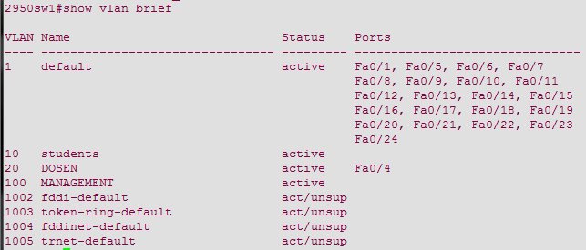
Masalah Umum VLAN 1: Native VLAN Mismatch
Terjadi hanya pada metode tagging 802.1Q (ISL tidak punya Native VLAN).
- Misal: Port Trunk Switch Kiri di-set Native VLAN 10. Port Trunk Switch Kanan di-set Native VLAN 20.
- Dampak: Akan timbul pesan peringatan (CDP error) dari switch. Menimbulkan celah keamanan di mana VLAN Merah seolah-olah terhubung langsung dengan VLAN Biru tanpa melewati router.
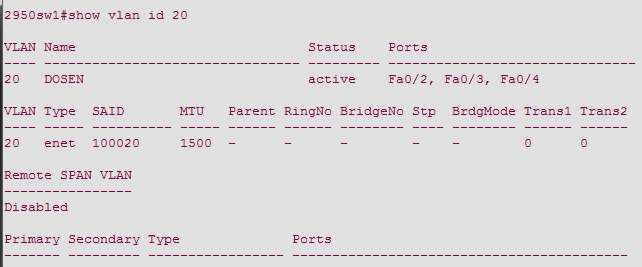
Masalah Umum VLAN 2 & 3: Mode & Allowed Mismatch
Mode Trunk Mismatch:
- Switch kiri dikonfigurasi hardcode
trunk, sedangkan switch kanan di-hardcodeaccess. - Dampak: Koneksi terputus total (broken link) karena format frame yang dikirim saling tidak dikenali.
Allowed VLAN Mismatch:
- Trunk kiri mengizinkan 10,20,30. Trunk kanan hanya mengizinkan 10,20.
- Dampak: User di VLAN 30 pada switch kiri tidak akan bisa berkomunikasi dengan PC VLAN 30 di switch kanan. Terpotong di tengah jalan.
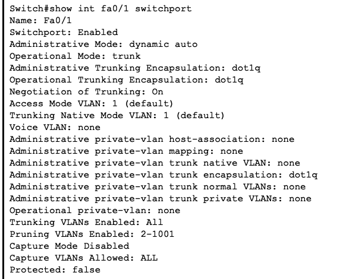
Tantangan Baru: Inter-VLAN Routing
Sejauh ini, VLAN memisahkan network. Lalu bagaimana jika ada PC dari VLAN 10 (Sales) benar-benar HARI INI butuh mengirim file ke PC di VLAN 20 (HRD)?
Karena 1 VLAN = 1 Subnet IP yang berbeda, maka Switch L2 biasa akan menyerah. Kita membutuhkan perangkat Layer 3 (ROUTER) untuk menjembatani komunikasi antar VLAN.
Terdapat tiga metode historis untuk melakukannya:
- Traditional Inter-VLAN Routing
- Router-on-a-Stick (ROAS)
- Layer 3 Switch (SVI)
1. Traditional Inter-VLAN Routing
Metode kuno yang boros.
- Switch mengalokasikan 1 port fisik Access khusus ke Router untuk VLAN 10.
- Switch mengalokasikan 1 port fisik Access lainnya ke Router untuk VLAN 20.
- Router harus menyediakan 2 port Ethernet fisik yang berbeda.
- Jika perusahaan kita punya 50 VLAN, router harus memiliki 50 port colokan fisik! (Sangat mahal dan tidak praktis).
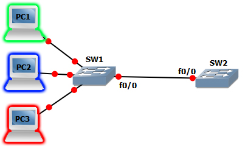
2. Router-on-a-Stick (ROAS)
Solusi cerdas yang masih digunakan hingga saat ini untuk network kecil/menengah.
- Koneksi Switch ke Router hanya menggunakan 1 Kabel Fisik Tunggal.
- Port tersebut di-set sebagai TRUNK 802.1Q.
- Di dalam sistem Router, antarmuka fisik tunggal (misal
Gig0/0) dipecah secara logika menjadi banyak Sub-Interface (sepertiGig0/0.10,Gig0/0.20). - Masing-masing sub-interface bertugas menjadi Default Gateway bagi tiap VLAN.
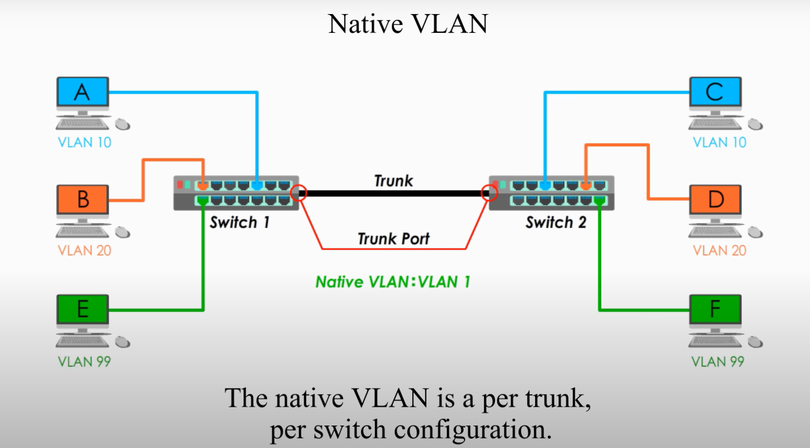
3. Layer 3 Switch (Switch Virtual Interface)
Teknologi modern untuk kelas Enterprise. Kenapa repot beli Router dan Switch terpisah jika satu Switch L3 bisa melakukan keduanya dengan kecepatan kilat?
- Switch Layer 3 (Multilayer Switch) dilengkapi dengan modul ASIC untuk memproses IP Routing (Layer 3).
- Routing dilakukan sepenuhnya di dalam kotak switch melalui interface logikal yang disebut SVI (Switch Virtual Interface).
- Sangat cepat (Wire-speed routing) karena tidak terhalang bandwidth kabel tunggal seperti pada konsep Router-on-a-Stick.
Tugas Praktikum Mandiri: Packet Tracer
Untuk menguji pemahaman materi 100 menit ini, kerjakan skenario simulasi berikut:
Instruksi Lab: Konfigurasi ROAS
- Letakkan 1 Router (Cisco 2911) dan 1 Switch (Cisco 2960).
- Buat 3 buah VLAN di Switch: VLAN 10, VLAN 20, VLAN 30.
- Masukkan 2 PC ke masing-masing VLAN sebagai Access Port.
- Konfigurasi link Switch <--> Router sebagai Trunk.
- Di Router, konfigurasikan Sub-interface dengan enkapsulasi dot1Q untuk menjadi gateway masing-masing subnet VLAN.
- Lakukan Ping antar VLAN untuk memvalidasi Routing!